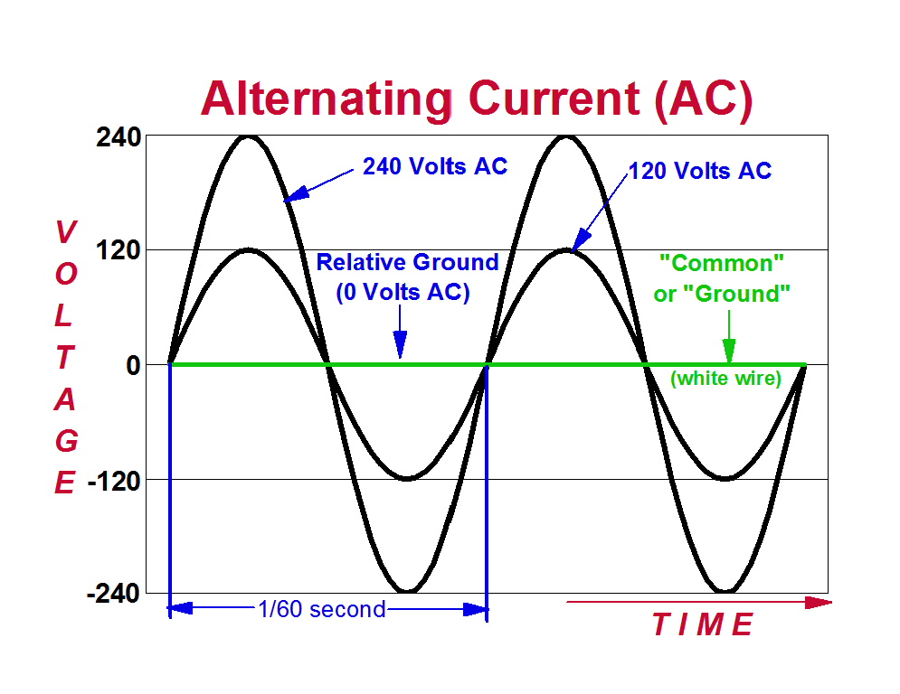
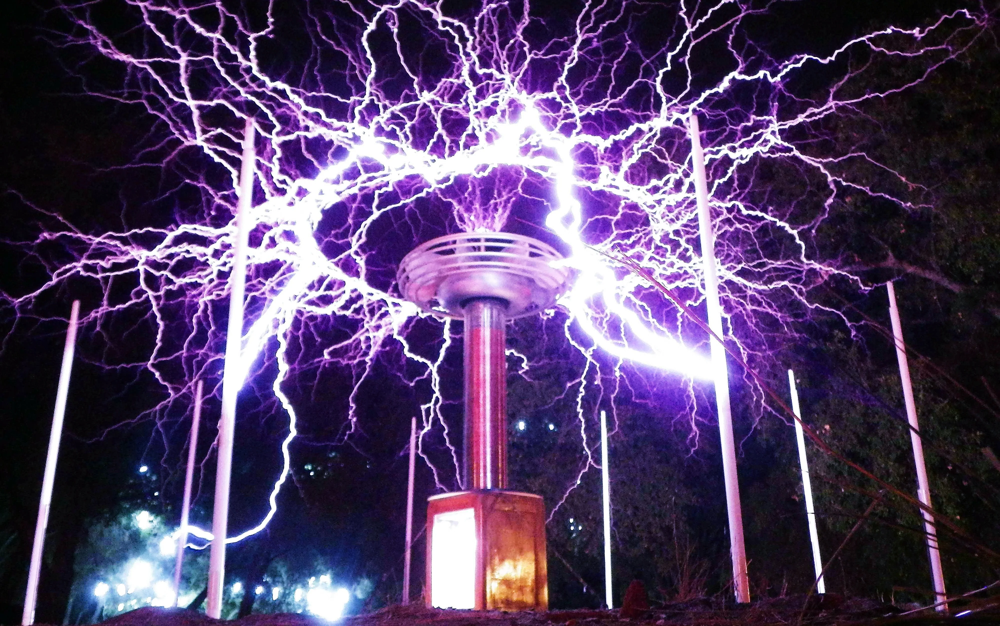
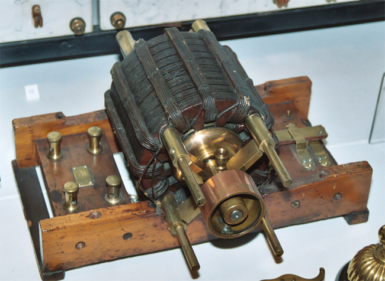
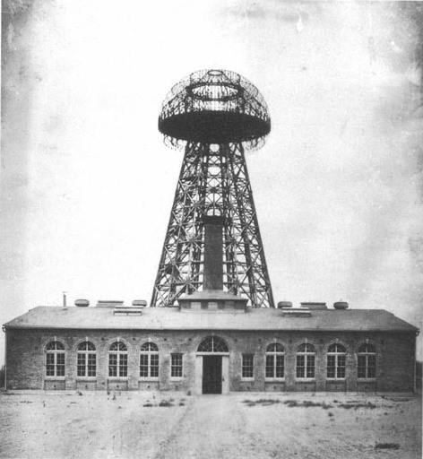

The alternating current (AC) system developed by Nikola Tesla allows electricity to flow in changing directions, making it far more efficient for long-distance transmission than direct current (DC). This system uses transformers to adjust voltage levels, enabling electricity to travel across cities and countries with minimal energy loss. Today, AC power is the global standard and is used to supply electricity to homes, industries, and infrastructure worldwide.

The Tesla Coil is a high-frequency, high-voltage transformer that produces spectacular electrical discharges resembling lightning. Tesla designed it while experimenting with wireless transmission of energy. It operates on the principles of electromagnetic induction and resonance, generating powerful electric fields. Although mainly used today for demonstrations and experiments, it played a crucial role in the development of radio technology and wireless communication.

The induction motor is one of Tesla’s most practical and widely used inventions. It works using alternating current and electromagnetic induction, eliminating the need for brushes or direct electrical contact. This makes it more durable, efficient, and low-maintenance compared to earlier motor designs. Induction motors are now used in countless applications, including household appliances, industrial machinery, and electric vehicles.

Tesla envisioned a future where electricity could be transmitted wirelessly across vast distances without the need for cables. Through experiments such as the Wardenclyffe Tower, he attempted to send energy through the Earth and atmosphere. Although the project was never fully completed, the idea was revolutionary and far ahead of its time. Today, this concept influences modern technologies such as wireless charging and ongoing research into long-distance wireless energy transfer.